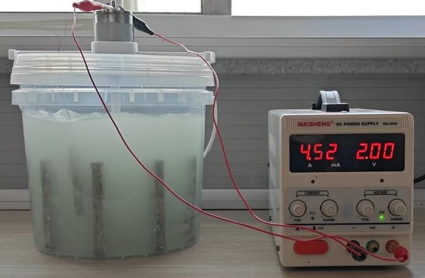
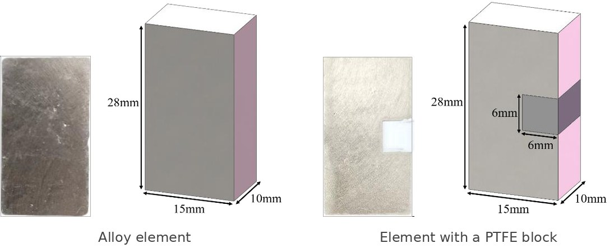
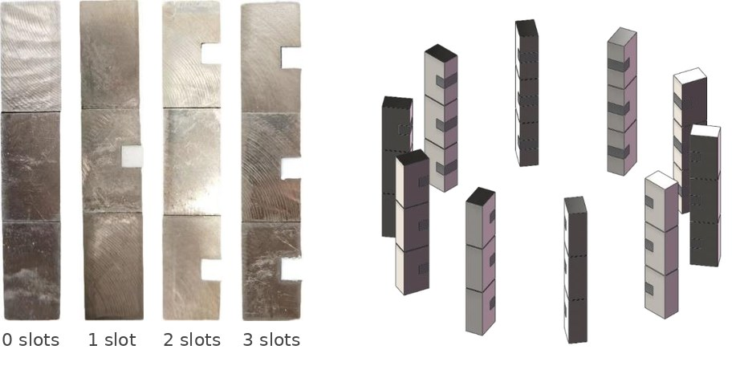
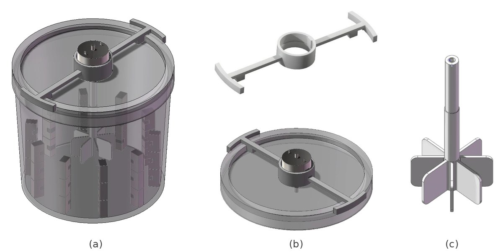
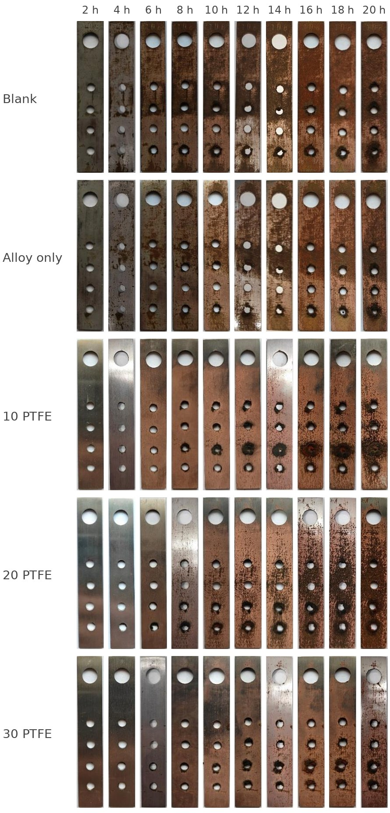

Bachelor's thesis (Prof. Guobin Li), Marine Engineering College
Dalian Maritime University · 2024

I fabricated the test elements, built the experimental rig, and conducted and analysed five controlled experiments to evaluate the anti-scaling performance of triboelectric–copper-alloy elements.
Scale, mostly calcium carbonate, builds up in the cooling-water system of a ship and cuts heat transfer. Copper-alloy anti-scaling elements work without power or chemicals, but their effect is capped by how much alloy fits in the pipe. The tested elements also act as solid–liquid triboelectric nanogenerators (SL-TENGs): a PTFE block embedded in the alloy is charged by the flowing water, with the alloy as the electrode. The extra charge speeds up the galvanic reaction of the alloy and holds scaling ions in an electric double layer, so less scale should form.
The experiments used simulated hard cooling water in a stirred-tank rig and compared five groups, from no treatment at all to elements that all carry a PTFE block. The thesis grew out of a student research project on the same approach that I led from September 2022 to June 2023, whose anti-scaling device is protected by a Chinese invention patent with me as a co-inventor (CN116062913B, granted 2024).
The elements are cut from the copper alloy by wire EDM. Half of them get a square slot with a solid PTFE block press-fitted into it, which, unlike the usual PTFE film, the flow cannot peel off.

Three elements glued end to end form one unit, and ten units stand at equal spacing around the tank wall. The treated groups differ only in how many elements of each unit carry a PTFE block (0, 1, 2 or 3), so a tank holds 0, 10, 20 or 30 of them among the same 30 elements.

The tank holds simulated hard cooling water, with calcium content and pH set from a Chinese industrial-water standard. A DC motor at constant voltage drives an impeller that keeps the water moving, and a test coupon hangs on a thread at a fixed position.
In the pre-test the motor vibrated badly on its acrylic mounting plate, so I designed a bracket in SolidWorks and 3D-printed it: the motor sits in it with an interference fit, a key and an internal shoulder stop it from turning or sliding, and the two arms clip onto the rim of the tank lid. The printed impeller has a keyed bore that matches the motor shaft, also with an interference fit.

The five groups share the same water, stirring and room temperature: a blank tank without elements, alloy elements only, and alloy elements with 10, 20 or 30 PTFE blocks. Each group runs for 20 hours; every hour the test coupon is taken out, dried, weighed and photographed. The scale-inhibition rate of each treated group follows from the coupon mass gain relative to the blank.

Longer tests under real operating conditions, including heat-exchanger temperatures; better ways of mounting the PTFE and the alloy; and scaling the device up from the lab tank to an actual cooling-water line.
Many thanks to Prof. Guobin Li for supervising this thesis.